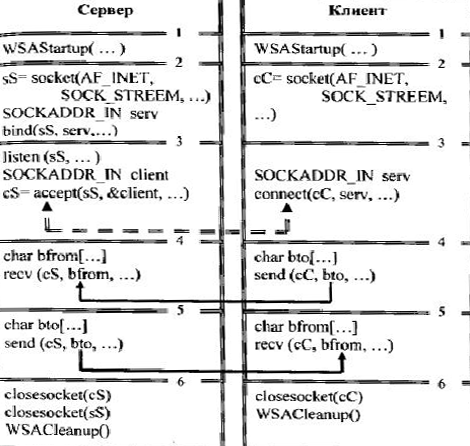

ЛАБОРАТОРНАЯ РАБОТА № 19
ПРОТОКОЛЫ ПЕРЕДАЧИ ДАННЫХ В
ЛОКАЛЬНЫХ И ГЛОБАЛЬНЫХ СЕТЯХ
Цель работы — изучить протоколы работы в локальных и глобальных сетях.
Теоретическая часть
В различных сетях существуют различные процедуры обмена данными между рабочими станциями. Эти процедуры называют протоколами передачи данных. В данной лабораторной работе будут рассмотрены некоторые протоколы передачи данных в локальных и глобальных сетях.
Протокол передачи данных требует следующей информации:
• Синхронизация. Под синхронизацией понимают механизм распознавания начала блока данных и его конца.
• Инициализация. Под инициализацией понимают установление соединения между взаимодействующими партнерами.
• Блокирование. Под блокированием понимают разбиение передаваемой информации на блоки данных строго определенной максимальной длины (включая знаки начала блока и его конца).
• Адресация. Адресация обеспечивает идентификацию различного используемого оборудования данных, которое обменивается друг с другом информацией во время взаимодействия.
• Обнаружение ошибок. Под обнаружением ошибок понимают установку битов четности и, следовательно, вычисление контрольных битов.
• Нумерация блоков. Текущая нумерация блоков позволяет установить ошибочно передаваемую или потерявшуюся информацию.
• Управление потоком данных. Управление потоком данных служит для распределения и синхронизации информационных потоков. Так, например, если не хватает места в буфере устройства данных или данные не достаточно быстро обрабатываются в периферийных устройствах (например, принтерах), сообщения и / или запросы накапливаются.
• Методы восстановления. После прерывания процесса передачи данных используют методы восстановления, чтобы вернуться к определенному положению для повторной передачи информации.
• Разрешение доступа. Распределение, контроль и управление ограничениями доступа к данным вменяются в обязанность пункта разрешения доступа (например, "только передача" или "только прием").
Рассмотрим некоторые протоколы передачи данных.
Протокол NETBEUI - это расширенный интерфейс пользователя NETBIOS (NETBIOS Extended User Interface), разработанный фирмой IBM. Его реализация в Microsoft Windows for Workgroups подходит только для небольших сетей, содержащих не более 100-200 рабочих станций. Причина этого заключается в том, что протокол NETBEUI способен работать только в одном сегменте сети (т. е. пакеты данных не могут проходить через мосты). Для того чтобы объединить пользователей Microsoft Windows for Workgroups, расположенных в разных, разделенных мостами, сегментах сети возможно использование протокола TCP/IP.
NWLink
Протокол NWLink представляет собой реализацию Microsoft стека протоколов IPX/SPX компании Novell. Клиенты и серверы Microsoft могут постепенно добавляться к существующим сетям, что облегчает переход с одной платформы на другую, устраняя необходимость резкой смены сетевого стандарта.
Этот протокол можно рассматривать как сетевой протокол среднего класса. Он реализует относительно разумный компромисс между простым немаршрутизируемым транспортным протоколом NetBEUI и сложным маршрутизируемым протоколом TCP/IP.
Протокол TCP/IP
Протокол TCP/IP на самом деле подразумевает два протокола: протокол TCP и протокол IP.
Протокол IP (Internet Protocol) был создан в конце 70-х годов и предназначен для объединения сетей, прежде всего удаленных. Его основная задача - адресация и передача пакетов данных.
Протокол TCP (Transmission Control Protocol) создан как надстройка над IP. В настоящее время этот протокол считается наиболее функционально полным и поддерживается практически любой современной операционной системой, в частности Microsoft Windows NT. Реализация протокола TCP/IP для операционной системы Microsoft Windows for Workgroups называется Windows Sockets.
Windows Sockets - это спецификация, обеспечивающая стандартный программный интерфейс для операционных систем Windows и UNIX. С ее помощью можно создавать гетерогенные сети на основе операционной системы Windows.
На уровне физического взаимодействия локальных сетей используются различные протоколы уровня звена передачи данных.
Существует множество различных типов локальных сетей: Ethernet, FastEthernet, TokenRing и другие. Все они отличаются в основном только протоколами доступа к физической среды (физический уровень ЭМВОС - Эталонная модель взаимодействия открытых систем). В то же время протоколы звена передачи данных (канальный уровень ЭМВОС) достаточно одинаковы. По крайней мере все они содержат поля МАС-адресов.
В данном обзоре остановимся подробнее пока только на следующих протоколах канального уровня.
Ethernet
Ethernet был разработан Исследовательским центром в Пало Альто (PARC) корпорации Xerox в 1970-м году. Ethernet стал основой для спецификации IEEE 802.3, которая появилась 1980-м году. После недолгих споров компании Digital Equipment Corporation, Intel Corporation и Xerox Corporation совместно разработали и приняли спецификацию (Version 2.0), которая была частично совместима с 802.3. На сегодняшний день Ethernet и IEEE 802.3 являются наиболее распространенными протоколами локальных вычислительных сетей (ЛВС). Сегодня термин Ethernet чаще всего используется для описания всех ЛВС работающих по принципу множественный доступ с обнаружением несущей (carrier sense multiple access/collision detection (CSMA/CD)), которые соотвествуют Ethernet, включая IEEE 802.3.
Когда Ethernet был разработан, он должен был заполнить нишу между глобальными сетями, низкоскоростными сетями и специализированными сетями компьтерных центров, которые работали на высокой скрости, но очень органиченном расстоянии. Ethernet хорошо подходит для приложений где локальные коммуникации должны выдерживать высокие нагрузки при высоких скоростях в пиках.
Формат протокола
При передаче через физическую среду передачи данных (кабель), упаковывается между стартовой преамбулой и хвостовиком кадра. Состав полей кадра пакета приведен в таблице. Первый байт каждого поля старший.
|
Размер поля в байтах |
Назначение |
|
6 |
MAC - адрес получателя |
|
6 |
MAC - адрес отправителя |
|
2 |
тип следующего протокола в соответствии с RFC-1700 |
|
45 - 1500 |
данные |
|
4 |
контрольная сумма |
Значения поля "тип следующего протокола" определены в рекомендации RFC1700. Данное поле с теми же значениями используется также в протоколах Bridge* и Router* (название условное). Кодировка поля следующая: первый байт старший, второй младший.
Обеспечение совместимости с протоколом IEEE802.3
Протокол Ethernet отличается от протокола IEEE802.3 практически только одним полем: 13-14 байты в Ethernet обозначают тип следующего протокола, а в протоколе IEEE802.3 - длину информационной части кадра (пакета). Поэтому для обеспечения согласования протоколов было принято следующее правило кодирования.
Если значение данных полей лежит в диапазоне 0000-05DC то принимается решение, что текущий протокольный блок относится к протоколу IEEE802.3 и это поле является длиной информационной части кадра (пакета). А если значения данных полей лежит вне этого диапазона, то принимается решение, что текущий протокольный блок относится к протоколу Ethernet, и поле указывает тип следующего протокола.
Назначение - передача МАС-кадров между абонентами ЛВС. Используется как непосредственно в Ethernet сетях, так и при связи сегментов сетей через другие среды (Frame Relay, ATM и др.). Состав полей кадра пакета приведен в таблице. Первый байт каждого поля старший. При передаче через физическую среду передачи данных (кабель), упаковывается между стартовой преамбулой и хвостовиком кадра.
|
Размер поля в байтах |
Назначение |
|
6 |
MAC - адрес получателя |
|
6 |
MAC - адрес отправителя |
|
2 |
длина информационной части дейтаграммы |
|
45 - 1500 |
данные (802.2 заголовок и данные) |
|
4 |
контрольная сумма |
Поле длины информационной части дейтаграммы кодируется следующим образом: первый байт старший, второй младший.
Обеспечивает уточнение протокола дальнейшей обработки. Как правило используется после протокола IEEE 802.2.
Структура протокольного блока
|
Байты |
Назначение |
|
0 ... 2 |
резерв |
|
3, 4 |
тип следующего протокола |
|
. . . |
данные |
Значения поля "тип следующего протокола" определены в рекомендации RFC1700. Данное поле с теми же значениями используется также в протоколах Bridge* и Router* (название условное).
FTP
FTP (File Transfer Protocol, протокол передачи файлов) — протокол, изначально разработанный и применяемый для передачи файлов с помощью Интернета. Без этого протокола было бы невозможным скачивание из Сети музыки, фильмов и других объемных данных, без которых современный пользователь компьютера не может представить свою жизнь. Существует множество программ, которые, используя протокол FTP, позволяют скачивать значительные объемы информации даже в условиях плохого соединения и низкой скорости передачи данных.
HTTP
HTTP (HyperText Transport Protocol, гипертекстовый транспортный протокол) — протокол, предназначенный для организации пересылки данных веб-страниц по Интернету или локальной сети. За время своего существования этот протокол претерпел значительные изменения; известно несколько его версий.
Особенностью протокола HTTP является то, что он может передавать любую информацию — текстовую и графическую. Это позволяет использовать при разработке веб-страниц дополнительные средства, которые делают их анимированными и красиво оформленными.
SLIP и РРР
С протоколами SLIP (Serial Line Internet Protocol, протокол последовательного подключения к Интернету) и PPP (Point-to-Point Protocol, протокол двухточечной связи) в основном работают провайдеры, которые используют для организации доступа в Интернет выделенные телефонные линии или другие каналы.
SLIP и РРР используются для организации постоянного подключения к Интернету с помощью модема. Для обычного пользователя наличие постоянного соединения с Интернетом является достаточно дорогим, поскольку при этом нужно платить как за время пребывания в Интернете, так и за используемую телефонную линию. Это могут позволить себе только достаточно крупные компании и интернет-провайдеры. Первые из них, как правило, в этом случае располагают одним или несколькими серверами с данными, а также личными веб-страницами, которые должны быть постоянно доступны через Интернет. Вторые используют постоянное подключение, поскольку это их работа.
Протоколы SLIP и РРР работают на нижних уровнях модели взаимодействия открытых систем, что позволяет специальным образом готовить пакеты данных для передачи их другими протоколами, например TCP/IP или IPX/SPX. Главное отличие протокола SLIP от протокола РРР заключается в том, что первый работает только на компьютерах с установленной операционной системой Unix и протоколом TCP/IP, а второй используется на компьютерах, работающих под управлением системы класса Windows NT, которая умеет обращаться практически с любыми протоколами передачи данных.
Данные протоколы предназначены для организации выхода в Интернет и работы в нем с использованием различных браузеров, менеджеров закачек и других программ.
IMAP
IMAP (Interactive Mail Access Protocol, протокол интерактивного доступа к электронной почте) — наиболее «продвинутый» почтовый протокол, предназначенный для приема электронных сообщений с почтового сервера. В большинстве случаев боле удобным и эффективным является использование протокола IMAP, чем РОРЗ.
К достоинствам протокола относится возможность частичного скачивания письма, разбития принимаемого письма на части с последующим склеиванием и многое другое.
РОРЗ
РОРЗ (Post Office Protocol 3, почтовый протокол версии 3) — почтовый протокол, который используется для приема электронных сообщений с почтового сервера.
Обычно РОРЗ работает в паре с протоколом SMTP, что позволяет организовать эффективную систему отсылки и приема электронных сообщений.
Интерфейс протокола еще более простой, чем интерфейс SMTP, и с этим связаны определенные неудобства. Так, отсутствует возможность выборочного скачивания письма или просмотра содержимого письма непосредственно на почтовом сервере.
SMTP
SMTP (Simple Mail Transfer Protocol, упрощенный протокол пересылки почты) — протокол, основной задачей которого является отсылка подготовленных специальным образом сообщений. Перед тем, как это сделать, протокол устанавливает соединение между компьютерами, что гарантирует доставку сообщения.
Протокол SMTP очень простой и эффективный, однако эта эффективность не распространяется на все задачи и возможности. Так, он не обладает даже простейшим механизмом аутентификации и возможностью шифрования данных при передаче между почтовыми серверами. Самым большим недостатком SMTP является его неспособность к пересылке графики.
Чтобы не отказываться от этого довольно хорошего протокола, было принято решение расширить его несколькими полезными и необходимыми расширениями. Таким расширением, например, является MIME (Multipurpose Internet Mail Extensions, многоцелевое расширение почтовой службы в Интернете), благодаря которому существует возможность отсылать файлы любого формата и содержания. Кроме того, разработан стандарт UUENCODE, позволяющий передавать текстовые сообщения в разных кодировках.
Особенностью почтовых протоколов является однозадачность. Например, протокол, отсылающий сообщения, не способен их принимать, и наоборот. Именно поэтому такие протоколы работают парами.
SPX
SPX (Sequenced Packet eXchange, последовательный обмен пакетами) — «родной брат» IPX, без которого его нельзя назвать полноценным протоколом. Эти протоколы используются вместе и имеют общее название — IPX/SPX.
Главная задача протокола SPX — установка логического соединения между выбранными компьютерами с последующей передачей подготовленных дейтаграмм.
IPX
IPX (Internetwork Packet eXchange, протокол межсетевого обмена объектами) — один из самых «ходовых» протоколов, используемых на сетевом уровне. Главной его задачей является определение оптимального маршрута между двумя выбранными компьютерами с использованием для этого данных других протоколов.
В первую очередь данный протокол вычисляет адрес компьютера, которому необходимо отправить пакет — дейтаграмму. Определив адрес нужного компьютера, он снабжает дейтаграмму служебной информацией (адресом отправителя и получателя) и отправляет «в путь» по выбранному маршруту.
Однако самостоятельно этот протокол работать не может, поскольку не способен устанавливать соединение между компьютерами. Соответственно, от IPX нельзя ожидать высокой степени надежности доставки пакетов.
Практическая часть
Основной целью практической работы является приобретение навыков разработки распределенного приложения архитектуры «клиент-сервер», осуществляющего обмен данными в локальной сети через Windows Sockets TCP-соединения.
1. Разработка серверной части приложения
Ознакомьтесь со схемой сервера. Создайте с помощью Visual Studio консольное приложение ServerT, которое будет использовано для построения серверной части.
Далее:
Инициализируйте библиотеку WS2_32.DLL (WSAStartup()).
if (WSAStartup(0x0202, (WSADATA *)&buff[0]))
{
printf("Error WSAStartup %d\n", WSAGetLastError());
return -1;
}
Создайте сокет (sS = socket()).
SOCKET mysocket;
mysocket = socket(AF_INET, SOCK_STREAM, 0);
Установите параметры сокета (bind()).
if (bind(mysocket, (sockaddr *)&local_addr, sizeof(local_addr)))
{
printf("Error bind %d\n", WSAGetLastError());
closesocket(mysocket);
WSACleanup();
return -1;
}
Используйте функцию для постановки сокет в режим прослушивания (listen()).
if (listen(mysocket, 0x100))
{
printf("Error listen %d\n", WSAGetLastError());
closesocket(mysocket);
WSACleanup();
return -1;
}
Определите разрешение на подключение к сокету (cS = accept())
client_socket = accept(mysocket, (sockaddr *)&client_addr, &client_addr_size);
Инициируйте обмен между клиентом и сервером (recv() и send()).
send(my_sock, sHELLO, sizeof(sHELLO), 0);
bytes_recv = recv(my_sock, &buff[0], sizeof(buff), 0);
Закройте сокет и завершите работу с библиотекой (closesocket(sS), WSACleanup()).
closesocket(my_sock);
WSACleanup();
2. Разработка клиентской части приложения
Ознакомьтесь со схемой клиента. Создайте с помощью Visual Studio консольное приложение ClientT, которое будет использовано для построения клиентской части.
Далее:
Инициализируйте библиотеку WS2_32.DLL (WSAStartup()).
if (WSAStartup(0x202, (WSADATA *)&buff[0]))
{
printf("WSAStart error %d\n", WSAGetLastError());
return -1;
}
Создайте сокет (sS = socket()).
SOCKET my_sock;
my_sock = socket(AF_INET, SOCK_STREAM, 0);
Напишите функцию подключения к серверу.
connect(my_sock, (sockaddr *)&dest_addr, sizeof(dest_addr));
Инициируйте обмен между клиентом и сервером (recv() и send()).
nsize = recv(my_sock, &buff[0], sizeof(buff) - 1, 0);
send(my_sock, &buff[0], strlen(&buff[0]), 0);
Закройте сокет и завершите работу с библиотекой (closesocket(sS), WSACleanup()).
closesocket(my_sock);
WSACleanup();
3. Обмен данными между сервером и клиентом
Запустите на выполнение приложение ServerT и убедитесь, что оно приостановилось на вызове функции accept.
Запустите на выполнение приложение ClientT, дождитесь пока придет приветственное сообщение от сервера. Отправьте сообщение серверу.
Построение серверной и клиентской частей приложения должно соответствовать схеме:

Рис. 19. 1. Обмен данными между сервером и клиентом
Контрольные вопросы
1. Что называется протоколом?
2. Какую информацию требует протокол передачи данных?
3. Что такое локальная сеть?
4. Что такое глобальная сеть?
5. Перечислите протоколы передачи данных.